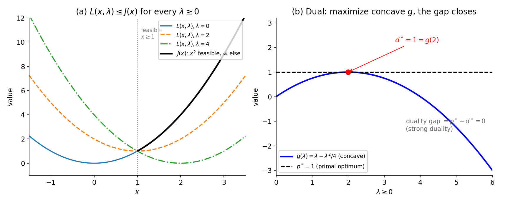

13. Duality and KKT conditions
This is the last chapter of Part I, and it ties the whole part together. Chapter 10 said: for unconstrained problems, \(\nabla f(\mathbf{x}^\star) = \mathbf{0}\) finds candidates, and gradient descent finds local minima (§10.8–10.9). Chapter 11 said: constraints change the game — the Lagrangian encodes them, and each inequality is either active or inactive at the optimum (§11.3, §11.7). Chapter 12 said: if everything is convex, local minima are global minima (§12.9), and \(\nabla f = \mathbf{0}\) becomes necessary and sufficient (§12.10). This chapter finishes the story: every constrained problem has a mirror image — the dual problem — and for convex problems the two mirrors agree (strong duality). Out of that agreement drop the KKT conditions: four equations that completely characterize the optimum of a convex constrained problem — the constrained analogue of “set the gradient to zero”.
The lectures build this in the simplest setting first — one inequality constraint — and only then generalize. This chapter follows that order.
13.1 The problem, revisited
Def. The (single-inequality) constrained problem = \[\min_{\mathbf{x}} f(\mathbf{x}) \quad \text{s.t.} \quad h(\mathbf{x}) \le 0,\] with \(f, h : \mathbb{R}^d \to \mathbb{R}\). \(f\) is the objective, \(h(\mathbf{x}) \le 0\) the constraint. The feasible set \(\{\mathbf{x} : h(\mathbf{x}) \le 0\}\) is a sublevel set of \(h\).
Note: Chapter 11 handled equality constraints \(l(\mathbf{x}) = 0\) with the Lagrangian (§11.3). Inequalities need one extra discipline: the multiplier must be non-negative. That sign is the whole subject of this chapter.
13.2 The Lagrangian, made formal
Def. The Lagrangian for the problem above = \[L(\mathbf{x}, \lambda) = f(\mathbf{x}) + \lambda\, h(\mathbf{x}), \qquad \lambda \ge 0.\] It takes two inputs: the variable \(\mathbf{x}\) (a vector) and one scalar Lagrange multiplier \(\lambda\) per constraint — here just one, since there is one constraint. (With \(m\) inequalities and \(n\) equalities there will be \(m + n\) multipliers; §13.9.)
Why \(\lambda \ge 0\)? Think of \(\lambda h(\mathbf{x})\) as a penalty for violating the constraint. If \(h(\mathbf{x}) > 0\) (violation) and \(\lambda > 0\), the penalty is positive — bad. If \(h(\mathbf{x}) \le 0\) (feasible) and \(\lambda \ge 0\), the penalty is \(\le 0\) — never a reward for leaving. A negative \(\lambda\) would reward violations, which is backwards. The sign discipline \(\lambda \ge 0\) is what makes the Lagrangian honest.
Basically, … The Lagrangian is the objective plus a fine for breaking the rule. The fine is \(\lambda\) rupees per unit of violation, and \(\lambda\) can’t be negative — you never get paid for breaking the rule.
13.3 The primal problem: maxing over \(\lambda\) is the constraint
Here is the lecture’s key move. Fix an \(\mathbf{x}\) and consider \[\max_{\lambda \ge 0} L(\mathbf{x}, \lambda) = \max_{\lambda \ge 0} \big[f(\mathbf{x}) + \lambda h(\mathbf{x})\big].\] \(f(\mathbf{x})\) is now a constant; only the penalty term moves. Two cases:
- \(h(\mathbf{x}) \le 0\) (feasible): \(\lambda h(\mathbf{x}) \le 0\) for every \(\lambda \ge 0\), so the biggest it can be is \(0\) — attained at \(\lambda = 0\). The max equals \(f(\mathbf{x})\).
- \(h(\mathbf{x}) > 0\) (infeasible): crank \(\lambda \to \infty\) and \(\lambda h(\mathbf{x}) \to \infty\). The max is \(\infty\).
So \(\max_{\lambda \ge 0} L(\mathbf{x}, \lambda)\) equals \(f(\mathbf{x})\) inside the feasible set and \(\infty\) outside — exactly the function \[J(\mathbf{x}) = \begin{cases} f(\mathbf{x}) & h(\mathbf{x}) \le 0 \\ \infty & \text{otherwise.} \end{cases}\]
Def. The primal problem = \[\min_{\mathbf{x}} \left[ \max_{\lambda \ge 0} L(\mathbf{x}, \lambda) \right] = \min_{\mathbf{x}} J(\mathbf{x}).\] It is equivalent to the original constrained problem: any \(\mathbf{x}\) outside the feasible set scores \(\infty\) and can never be the minimum, so the minimizer must be feasible, and among feasible points \(J = f\). Call the primal solution \(\mathbf{x}^\star\) and the primal optimal value \(p^\star = f(\mathbf{x}^\star)\).
Note: We have not made anything easier — the lectures are explicit that this min-max “can be hard to solve”. The payoff comes from swapping the min and the max.
Basically, … The inner max is a bouncer: show a feasible \(\mathbf{x}\) and it lets you through with your exact \(f(\mathbf{x})\); show an infeasible one and it throws you out with an infinite bill. Minimizing over \(\mathbf{x}\) afterwards therefore solves the original problem — with the constraint now encoded in the objective.
13.4 Swap the min and the max: the dual function and the dual problem
Out of curiosity, swap the order: \[\max_{\lambda \ge 0} \left[ \min_{\mathbf{x}} L(\mathbf{x}, \lambda) \right].\]
Def. The dual function = \[g(\lambda) = \min_{\mathbf{x}} L(\mathbf{x}, \lambda) = \min_{\mathbf{x}} \big[f(\mathbf{x}) + \lambda h(\mathbf{x})\big].\]
Def. The dual problem = \(\max_{\lambda \ge 0} g(\lambda)\). Call the dual solution \(\lambda^\star\) and the dual optimal value \(d^\star = g(\lambda^\star)\).
Why would anyone do this? Two reasons (both from the lectures):
- The inner problem \(\min_{\mathbf{x}} L(\mathbf{x}, \lambda)\) is unconstrained — the whole Chapter 10 toolbox applies.
- The outer constraint is just \(\lambda \ge 0\) — far simpler than the original \(h(\mathbf{x}) \le 0\).
So the dual is “typically easier” than the primal. The catch: swapping min and max changes the problem, and nothing yet says the two optima agree. That is what §§13.6–13.7 settle.
Basically, … The primal does the hard part (constraints) on the inside and the easy part outside; the dual flips it — unconstrained on the inside, a trivial \(\lambda \ge 0\) on the outside. Same ingredients, much friendlier order.
13.5 The dual function is concave (the lecturer’s exercise)
Theorem. \(g(\lambda) = \min_{\mathbf{x}} L(\mathbf{x}, \lambda)\) is a concave function of \(\lambda\).
Proof. Fix \(\mathbf{x}\). As a function of \(\lambda\), \(L(\mathbf{x}, \lambda) = f(\mathbf{x}) + \lambda h(\mathbf{x})\) is affine (a straight line in \(\lambda\)). So \(g\) is the pointwise minimum of a family of affine functions — one line per \(\mathbf{x}\). Take \(\lambda_1, \lambda_2\) and \(\theta \in [0, 1]\): \[g(\theta\lambda_1 + (1-\theta)\lambda_2) = \min_{\mathbf{x}} \big[\theta L(\mathbf{x}, \lambda_1) + (1-\theta) L(\mathbf{x}, \lambda_2)\big].\] For every \(\mathbf{x}\), \(\theta L(\mathbf{x}, \lambda_1) + (1-\theta)L(\mathbf{x}, \lambda_2) \ge \theta g(\lambda_1) + (1-\theta) g(\lambda_2)\) (each term is at least its own minimum). Taking \(\min_{\mathbf{x}}\) on the left preserves the inequality: \[g(\theta\lambda_1 + (1-\theta)\lambda_2) \ge \theta g(\lambda_1) + (1-\theta) g(\lambda_2),\] which is exactly the concavity chord inequality (graph above its chords). ∎
So the dual problem is: maximize a concave function over \(\lambda \ge 0\) — a well-behaved problem (maximizing concave is the mirror of minimizing convex).
Basically, … Each fixed \(\mathbf{x}\) gives a straight line in \(\lambda\); the dual function is the lower envelope of all those lines — and the lower envelope of straight lines always sags downward like a frown, i.e. it is concave.
13.6 Weak duality: the dual always under-promises (\(d^\star \le p^\star\))
Theorem (weak duality). For any \(f, h\) (no convexity needed), \[\boxed{d^\star \le p^\star.}\] The dual optimal value never exceeds the primal optimal value. The difference \(p^\star - d^\star \ge 0\) is the duality gap.
Proof (following the lectures). Fix any \(\lambda \ge 0\).
- From §13.3: \(L(\mathbf{x}, \lambda) \le J(\mathbf{x})\) for every \(\mathbf{x}\) — if \(h(\mathbf{x}) \le 0\) then \(L = f + \lambda h \le f = J\); if \(h(\mathbf{x}) > 0\) then \(L \le \infty = J\).
- Take \(\min_{\mathbf{x}}\) on both sides: \(\min_{\mathbf{x}} L(\mathbf{x}, \lambda) \le \min_{\mathbf{x}} J(\mathbf{x})\). The left side is \(g(\lambda)\); the right side is \(p^\star\) (the min of \(J\) is the constrained optimum \(f(\mathbf{x}^\star)\)).
- This holds for every \(\lambda \ge 0\), so it holds for the \(\lambda\) that maximizes \(g\): \(\max_{\lambda \ge 0} g(\lambda) \le p^\star\), i.e. \(d^\star \le p^\star\). ∎
Note: The panel (a) of the figure is this proof drawn: for the problem \(\min x^2\) s.t. \(x \ge 1\) (i.e. \(h(x) = 1 - x \le 0\)), every Lagrangian curve \(L(x, \lambda) = x^2 + \lambda(1-x)\) lies on or below \(J(x)\) — which is \(x^2\) for \(x \ge 1\) and \(\infty\) elsewhere.

Corollary. If the primal is unbounded below (\(p^\star = -\infty\)), the dual must be infeasible (\(d^\star = -\infty\)); if the dual is unbounded above (\(d^\star = +\infty\)), the primal must be infeasible (\(p^\star = +\infty\)). (The tutorial’s primal/dual table says exactly this for LPs; it follows from \(d^\star \le p^\star\) in general.)
Basically, … Weak duality is a free lunch with a catch: solve the (easier) dual and you get a guaranteed lower bound on the true optimum — but not the optimum itself. The gap between the bound and the truth is the duality gap, and nothing so far closes it.
13.7 Strong duality: for convex problems the gap closes (\(d^\star = p^\star\))
Theorem (strong duality). If \(f\) and \(h\) are convex, then (up to some regularity conditions) \[\boxed{d^\star = p^\star.}\] Solve the dual, and you have solved the primal. The lectures state this as “a very, very powerful theorem” and do not prove it.
Note on the fine print. The lectures only ever say “up to some regularity conditions” / “modulo regularity” — they never name them. In the standard literature these are the constraint qualifications, the most famous being Slater’s condition (roughly: some strictly feasible point exists, i.e. some \(\mathbf{x}\) with \(h(\mathbf{x}) < 0\) strictly). For this book’s purposes — convex \(f\), convex constraints, nothing pathological — strong duality holds, and we use it.
Basically, … Weak duality says the dual’s answer is at most the primal’s answer. Strong duality says: if everything is convex (and the problem isn’t degenerate), the two answers are equal. The mirror reflects perfectly — so you may solve whichever side is easier.
13.8 The KKT conditions, derived from strong duality
Assume \(f, h\) convex, strong duality holds, and \(\mathbf{x}^\star, \lambda^\star\) are the primal/dual optima. What must this pair satisfy? The lectures derive two non-trivial conditions (call them C1, C2) plus the two obvious ones.
C1 — stationarity. By strong duality, \(f(\mathbf{x}^\star) = g(\lambda^\star) = \min_{\mathbf{x}} [f(\mathbf{x}) + \lambda^\star h(\mathbf{x})]\). So \(\mathbf{x}^\star\) minimizes the unconstrained function \(L(\cdot, \lambda^\star)\) — and an unconstrained minimizer has zero gradient (§10.8): \[\boxed{\nabla f(\mathbf{x}^\star) + \lambda^\star \nabla h(\mathbf{x}^\star) = \mathbf{0}.} \tag{a}\]
C2 — complementary slackness. The same equality, read differently: \(f(\mathbf{x}^\star) = \min_{\mathbf{x}} [f(\mathbf{x}) + \lambda^\star h(\mathbf{x})]\). The minimum over all \(\mathbf{x}\) is \(\le\) the value at any particular \(\mathbf{x}\) — in particular at \(\mathbf{x}^\star\) itself: \[f(\mathbf{x}^\star) \le f(\mathbf{x}^\star) + \lambda^\star h(\mathbf{x}^\star).\] But \(\lambda^\star \ge 0\) and \(h(\mathbf{x}^\star) \le 0\) (dual and primal feasibility), so the extra term is \(\le 0\), i.e. the right side is \(\le f(\mathbf{x}^\star)\). Sandwiched between \(f(\mathbf{x}^\star)\) and \(f(\mathbf{x}^\star)\), it must equal \(f(\mathbf{x}^\star)\) — forcing the extra term to zero: \[\boxed{\lambda^\star h(\mathbf{x}^\star) = 0.} \tag{b}\]
The remaining two are the feasibility conditions we already knew: \[\boxed{h(\mathbf{x}^\star) \le 0} \tag{c} \quad \text{[primal feasibility]}\] \[\boxed{\lambda^\star \ge 0} \tag{d} \quad \text{[dual feasibility]}\]
These four are the Karush–Kuhn–Tucker (KKT) conditions. The lectures name them after the three people who formulated them.
Basically, … (a) says: at the optimum, the Lagrangian looks flat — same first-order idea as \(\nabla f = 0\), but for the penalized objective. (b) says: either the constraint is tight (\(h = 0\)) or its multiplier is off (\(\lambda = 0\)) — you don’t pay a fine on a rule you weren’t breaking. (c) and (d) say: the answer must be feasible, and the fine must be non-negative.
13.9 The general KKT form: \(m\) inequalities, \(n\) equalities
The one-constraint derivation was for exposition. For the general problem \[\min_{\mathbf{x}} f(\mathbf{x}) \quad \text{s.t.} \quad h_i(\mathbf{x}) \le 0 \;\; (i = 1, \dots, m), \quad l_j(\mathbf{x}) = 0 \;\; (j = 1, \dots, n),\] give every constraint its own multiplier: \(u_i \ge 0\) for the inequalities, \(v_j\) (free sign) for the equalities. The Lagrangian is \[L(\mathbf{x}, \mathbf{u}, \mathbf{v}) = f(\mathbf{x}) + \sum_{i=1}^{m} u_i h_i(\mathbf{x}) + \sum_{j=1}^{n} v_j l_j(\mathbf{x}).\] The same argument goes through, and the KKT conditions read:
- Stationarity: \(\nabla f(\mathbf{x}^\star) + \sum_{i=1}^{m} u_i^\star \nabla h_i(\mathbf{x}^\star) + \sum_{j=1}^{n} v_j^\star \nabla l_j(\mathbf{x}^\star) = \mathbf{0}\) (the zero vector).
- Complementary slackness: \(u_i^\star h_i(\mathbf{x}^\star) = 0\) for every \(i\) (only the inequalities need it — for equalities \(l_j(\mathbf{x}^\star) = 0\) already).
- Primal feasibility: \(h_i(\mathbf{x}^\star) \le 0\) for every \(i\); \(l_j(\mathbf{x}^\star) = 0\) for every \(j\).
- Dual feasibility: \(u_i^\star \ge 0\) for every \(i\) (the \(v_j^\star\) are unrestricted).
Note: With no inequality constraints this collapses to §11.3’s Lagrange conditions (stationarity only) — the KKT conditions are their proper generalization.
13.10 Necessary, sufficient — and the certificate
The lectures are careful about which direction the KKT conditions work:
- Necessity (convex case). If \(f\) and the constraints are convex (modulo regularity), every optimal \((\mathbf{x}^\star, \mathbf{u}^\star, \mathbf{v}^\star)\) must satisfy KKT — that is what §13.8 proved.
- Sufficiency — read the fine print. The lectures assert that KKT \(\Rightarrow\) local optimum “irrespective of convex or not” (asserted, not proved). That is overstated: without convexity a KKT point can be a saddle or even a local maximum. Counterexample: \(\min_x -x^2\) s.t. \(x \le 0\) — stationarity (\(-2x + u = 0\)), complementary slackness (\(ux = 0\)), primal feasibility (\(x \le 0\)), and dual feasibility (\(u \ge 0\)) all hold at \((x^\star, u^\star) = (0, 0)\), yet \(x = 0\) is a local maximum (\(f(-0.1) = -0.01 < f(0) = 0\)). What is standard: under the regularity conditions, KKT is necessary for a local optimum — even without convexity; but sufficiency needs convexity, which is exactly what (iii) supplies.
- Both (convex case). For convex problems, (i) + (ii) + §12.9 (every local minimum of a convex function is global) combine: the KKT conditions are necessary and sufficient for global optimality. The transcript’s words: for convex problems the KKT conditions “completely characterize the optimal solution”; in the KKT-continued lecture, they are “both necessary and sufficient for most convex optimization problems”.
This makes KKT a certificate: hand me a candidate \((\mathbf{x}^\star, \mathbf{u}^\star)\) for a convex problem; if it passes the four checks, I know it is optimal — I never had to run an optimizer. Compare §10.8: there \(\nabla f = \mathbf{0}\) was only a necessary condition (it also holds at maxima and saddles). For convex constrained problems, KKT upgrades “suspect” to “convicted”.
Basically, … The KKT conditions are the constrained version of “\(\nabla f = 0\) means you’re at the bottom” — except better: for convex problems they don’t just suggest optimality, they prove it. Find numbers satisfying (a)–(d) and the case is closed.
13.11 Reading complementary slackness: active vs. inactive
Condition (b), \(u_i^\star h_i(\mathbf{x}^\star) = 0\), is the formal version of §11.7’s active/inactive discussion:
- If \(u_i^\star > 0\) (the multiplier is “on”), then \(h_i(\mathbf{x}^\star) = 0\) — the constraint is active (binding): the optimum sits exactly on that constraint’s boundary.
- If \(h_i(\mathbf{x}^\star) < 0\) (strictly inside — inactive), then \(u_i^\star = 0\) — the multiplier is “off”: the constraint might as well not exist.
- Both zero is allowed: a constraint can be exactly tight yet carry no penalty.
So at the optimum, inactive constraints drop out of the Lagrangian — only the active ones shape the answer. This is why the tutorial’s LP below only ever uses two of its four constraints.
Basically, … Think of \(u_i^\star\) as the price you’d pay to relax constraint \(i\) a little. A slack constraint has price zero — loosening a rule you’re not even touching changes nothing. A binding constraint can have a positive price — it is genuinely holding the optimum back.
13.12 eg 1 — the tutorial’s LP, solved end-to-end with KKT (full steps)
The Week 9 tutorial’s canonical example: \[\min_{x_1, x_2} \; 3x_1 + x_2 \quad \text{s.t.} \quad x_1 - x_2 + 4 \le 0, \;\; -3x_1 + 2x_2 + 10 \le 0, \;\; x_1, x_2 \ge 0.\]
- Standard form. \(h_1 = x_1 - x_2 + 4 \le 0\), \(h_2 = -3x_1 + 2x_2 + 10 \le 0\), \(h_3 = -x_1 \le 0\), \(h_4 = -x_2 \le 0\), with multipliers \(u_1, \dots, u_4 \ge 0\).
- Lagrangian. \(L = 3x_1 + x_2 + u_1(x_1 - x_2 + 4) + u_2(-3x_1 + 2x_2 + 10) - u_3x_1 - u_4x_2\).
- Stationarity. \[\frac{\partial L}{\partial x_1} = 3 + u_1 - 3u_2 - u_3 = 0, \qquad \frac{\partial L}{\partial x_2} = 1 - u_1 + 2u_2 - u_4 = 0. \tag{1, 2}\]
- Guess which constraints are active. Try \(h_1, h_2\) active (i.e. \(u_1, u_2 > 0\)) and the non-negativity constraints slack (\(u_3 = u_4 = 0\); we will verify). Then (1, 2) become: \[3 + u_1 - 3u_2 = 0, \qquad 1 - u_1 + 2u_2 = 0.\] From the second: \(u_1 = 1 + 2u_2\). Substitute into the first: \(3 + (1 + 2u_2) - 3u_2 = 0\), so \(4 - u_2 = 0\), giving \(\boxed{u_2 = 4}\) and \(\boxed{u_1 = 9}\). Dual feasibility: \(9 \ge 0\), \(4 \ge 0\) ✓.
- Complementary slackness. \(u_1 > 0 \Rightarrow h_1 = 0\): \(x_1 - x_2 + 4 = 0\), so \(x_1 = x_2 - 4\). \(u_2 > 0 \Rightarrow h_2 = 0\): \(-3x_1 + 2x_2 + 10 = 0\). Substitute: \(-3(x_2 - 4) + 2x_2 + 10 = 0\), i.e. \(-x_2 + 22 = 0\), so \(\boxed{x_2 = 22}\) and \(\boxed{x_1 = 18}\).
- Verify the guess. Primal feasibility: \(h_1 = 18 - 22 + 4 = 0 \le 0\) ✓; \(h_2 = -54 + 44 + 10 = 0 \le 0\) ✓; \(x_1 = 18 \ge 0\), \(x_2 = 22 \ge 0\) ✓ (so \(u_3 = u_4 = 0\) was consistent: \(0 \cdot (-18) = 0\), \(0 \cdot (-22) = 0\) ✓). Complementary slackness: \(9 \cdot 0 = 0\), \(4 \cdot 0 = 0\) ✓.
- Optimum. \(\boxed{f^\star = 3 \cdot 18 + 22 = 76}\). The problem is an LP — hence convex — so KKT is necessary and sufficient: this is the global optimum, certified without any search.
Note: The solution strategy is always this two-step dance: guess the active set (which \(u_i > 0\)), solve the resulting equations, then verify all four KKT conditions. A wrong guess fails verification — that is the method telling you to try another active set (Problem 8 shows a failed guess).
13.13 eg 2 — a quadratic with an inequality constraint, primal and dual (full steps)
\[\min_{x} \; x^2 \quad \text{s.t.} \quad x \ge 1 \;\; \Longleftrightarrow \;\; h(x) = 1 - x \le 0.\]
- KKT. \(L(x, u) = x^2 + u(1 - x)\). Stationarity: \(2x - u = 0\). Complementary slackness: \(u(1 - x) = 0\). Primal feasibility: \(1 - x \le 0\). Dual feasibility: \(u \ge 0\).
- Solve. If \(u = 0\), stationarity gives \(x = 0\), but \(1 - 0 = 1 \not\le 0\) — violates primal feasibility. So \(u > 0\), hence \(1 - x = 0\): \(\boxed{x^\star = 1}\), \(\boxed{u^\star = 2}\) (from \(2x = u\)). Check: \(2(1-1) = 0\) ✓, \(1 - 1 = 0 \le 0\) ✓, \(2 \ge 0\) ✓. \(\boxed{f^\star = 1}\).
- The dual, explicitly. \(g(u) = \min_x [x^2 + u(1-x)]\): unconstrained min at \(x = u/2\), so \(g(u) = \frac{u^2}{4} + u\left(1 - \frac{u}{2}\right) = u - \frac{u^2}{4}\) — concave, as §13.5 promised (panel (b) of the figure). \(\max_{u \ge 0} g(u)\): \(g'(u) = 1 - u/2 = 0\) gives \(u^\star = 2\), \(d^\star = g(2) = 2 - 1 = 1\).
- The gap closes. \(d^\star = 1 = p^\star\) — strong duality in numbers, since \(f\) is convex (\(f'' = 2 > 0\), §12.7) and \(h\) is linear.
Basically, … Without the constraint the answer would be \(x = 0\); the constraint \(x \ge 1\) drags the optimum to the boundary \(x = 1\), and the multiplier \(u^\star = 2\) is exactly the “price” of that drag — relax the constraint a touch and the objective improves at rate 2.
13.14 eg 3 — the diet problem: a primal/dual pair from the tutorial (full steps)
The tutorial’s interpretation example. Primal (minimize cost subject to nutrition requirements): \[\min_{x_1, x_2} \; 50x_1 + 80x_2 \quad \text{s.t.} \quad 3x_1 \ge 6, \;\; 2x_1 + 4x_2 \ge 10, \;\; 2x_1 + 5x_2 \ge 8, \;\; x_1, x_2 \ge 0.\] Its dual (given in the tutorial): \[\max_{y_1, y_2, y_3} \; 6y_1 + 10y_2 + 8y_3 \quad \text{s.t.} \quad 3y_1 + 2y_2 + 2y_3 \le 50, \;\; 4y_2 + 5y_3 \le 80, \;\; y_1, y_2, y_3 \ge 0.\]
- Primal optimum. From \(3x_1 \ge 6\): \(x_1 \ge 2\). The first two constraints bind: \(x_1 = 2\), \(2(2) + 4x_2 = 10 \Rightarrow x_2 = 1.5\). Check the third: \(4 + 7.5 = 11.5 \ge 8\) ✓. Value: \(50(2) + 80(1.5) = 100 + 120 = 220\).
- Dual optimum. Complementary slackness suggests: primal constraints 1, 2 binding and \(x_1, x_2 > 0\), so try dual constraints binding with \(y_3 = 0\) (primal constraint 3 slack). Then \(3y_1 + 2y_2 = 50\), \(4y_2 = 80\): \(y_2 = 20\), \(3y_1 = 50 - 40 = 10\), \(y_1 = 10/3\). Feasible ✓. Value: \(6(10/3) + 10(20) + 8(0) = 20 + 200 = 220\).
- Verdict. \(d^\star = 220 = p^\star\): strong duality again (LPs are convex problems). And the certificate argument (Problem 10): a primal-feasible point with value 220 and a dual-feasible point with value 220 prove each other optimal via weak duality — \(220 \le d^\star \le p^\star \le 220\).
Basically, … The primal asks “cheapest menu meeting the diet”; the dual asks the mirror question. Both arrive at 220 — two different problems, one answer. That is strong duality you can taste.
13.15 Why this matters: SVMs, and the Part I closing shot
The lectures end the optimization part of the course with one machine-learning example — the support vector machine (Chapters 32–33 will build it properly):
\[\min_{\mathbf{w}} \; \frac{1}{2}\lVert\mathbf{w}\rVert^2 \quad \text{s.t.} \quad y_i\,\mathbf{w}^T\mathbf{x}_i \ge 1 \;\; \forall i,\] i.e. \(h_i(\mathbf{w}) = 1 - y_i\,\mathbf{w}^T\mathbf{x}_i \le 0\) for each datapoint \((\mathbf{x}_i, y_i)\).
- The objective is quadratic — convex (§12.7: its Hessian is the identity, eigenvalues \(1 > 0\)). The constraints are linear — convex. So strong duality holds: the primal and dual have the same optimal value.
- The dual is therefore fair game — and the lectures promise it is the better game: solving the dual “will help one go from linear models to non-linear models in a very smooth way”, leading to kernel methods (Chapter 33).
- The KKT conditions will do real work there: complementary slackness will tell us that only the active constraints matter — the datapoints sitting exactly on the margin. Those are the support vectors; every other point gets multiplier zero and drops out of the answer. (§13.11’s “price” intuition, weaponized.)
Basically, … The SVM is a quadratic objective with linear constraints — exactly the kind of problem this chapter was built for. Duality lets us solve the mirror problem instead, and complementary slackness then reveals that only a few special datapoints (the support vectors) actually decide the answer.
Part I, in one paragraph. Unconstrained optimization (Ch 10): follow the gradient down; \(\nabla f = \mathbf{0}\) marks the suspects. Constraints (Ch 11): the Lagrangian folds constraints into the objective; inequalities are active or inactive. Convexity (Ch 12): the bowl shape that makes every local minimum global. Duality and KKT (this chapter): every constrained problem has a concave mirror image; for convex problems the mirror agrees, and the four KKT conditions certify optimality outright. With this, Part I’s machinery is complete — Part II puts probability underneath it.
Problem set
- For \(\min_x x^2\) s.t. \(x \ge 2\): write \(h\), \(L\), the primal and the dual function \(g(\lambda)\). Solve the dual, report \(p^\star\), \(d^\star\) and the gap, and verify all four KKT conditions at the optimum.
- For the tutorial LP of §13.12, compute each complementary-slackness product \(u_i^\star h_i(\mathbf{x}^\star)\) numerically and each primal-feasibility residual \(h_i(\mathbf{x}^\star)\), and confirm stationarity holds — i.e. verify KKT by hand at \(((18, 22), (9, 4, 0, 0))\).
- Diet problem (§13.14): (a) check \((x_1, x_2) = (2, 1.5)\) is primal feasible with value \(220\); (b) check \((y_1, y_2, y_3) = (10/3, 20, 0)\) is dual feasible with value \(220\); (c) use weak duality to prove both are optimal and \(p^\star = d^\star = 220\).
- Prove the dual function \(g(\lambda) = \min_{\mathbf{x}} L(\mathbf{x}, \lambda)\) is concave (the lecturer’s exercise) — see §13.5 for the skeleton; write every step.
- For \(\min_x (x-3)^2\) s.t. \(x \le 1\): compute \(\max_{\lambda \ge 0} L(x, \lambda)\) for (i) \(x = 0\) and (ii) \(x = 2\), and verify each equals \(J(x)\) from §13.3.
- For \(\min_{x,y} x^2 + y^2\) s.t. \(x + y \ge 1\): (a) write \(h\) and \(L\); (b) compute \(g(\lambda)\) and \(d^\star\); (c) state the weak-duality lower bound on \(p^\star\); (d) solve the primal (hint: Cauchy–Schwarz) and check whether the gap closes.
- KKT verification: for \(\min_x x^2\) s.t. \(1 - x \le 0\), check all four KKT conditions at \((x^\star, u^\star) = (1, 2)\), one line each.
- Someone proposes \((x, u) = (0, 0)\) for the problem in Problem 7. Test each KKT condition — which one(s) fail? What does this say about trusting stationarity alone (cf. §10.8)?
- From scratch: \(\min_{x_1, x_2} 2x_1 + 3x_2\) s.t. \(x_1 + x_2 \ge 4\), \(x_1, x_2 \ge 0\). (a) Put it in standard form \(h_i \le 0\). (b) Write \(L\) and all four KKT conditions. (c) Guess the active set, solve for \((\mathbf{x}^\star, \mathbf{u}^\star)\), verify, and report \(f^\star\).
- The certificate theorem: for a convex problem, prove that any \((\mathbf{x}^\star, \mathbf{u}^\star)\) satisfying all KKT conditions must satisfy \(p^\star = d^\star = f(\mathbf{x}^\star)\). (Hint: chain \(f(\mathbf{x}^\star) = g(\mathbf{u}^\star) \le d^\star \le p^\star \le f(\mathbf{x}^\star)\), justifying each link.)
Solutions
Attempt each problem first, then click a problem to reveal its worked solution.
1. \(\min_x x^2\) s.t. \(x \ge 2\).
\(h(x) = 2 - x \le 0\). Lagrangian: \(L(x, \lambda) = x^2 + \lambda(2 - x)\), \(\lambda \ge 0\). Primal: \(\min_x \max_{\lambda \ge 0} L(x, \lambda)\); geometrically the answer is \(x^\star = 2\), \(p^\star = 4\). Dual function: \(g(\lambda) = \min_x [x^2 + \lambda(2 - x)]\). Unconstrained min: \(\frac{d}{dx} = 2x - \lambda = 0 \Rightarrow x = \lambda/2\). So \[g(\lambda) = \frac{\lambda^2}{4} + \lambda\left(2 - \frac{\lambda}{2}\right) = 2\lambda - \frac{\lambda^2}{4}.\] Dual: \(\max_{\lambda \ge 0} g(\lambda)\): \(g'(\lambda) = 2 - \lambda/2 = 0 \Rightarrow \lambda^\star = 4 \ge 0\) ✓; \(g'' = -1/2 < 0\) so this is the max. \(d^\star = g(4) = 8 - 4 = 4\). Gap: \(p^\star - d^\star = 4 - 4 = 0\) — strong duality (convex: \(f'' = 2 > 0\), \(h\) linear). KKT at \((2, 4)\): stationarity \(2(2) - 4 = 0\) ✓; CS \(4(2-2) = 0\) ✓; PF \(2 - 2 = 0 \le 0\) ✓; DF \(4 \ge 0\) ✓.
2. Tutorial LP at \(\mathbf{x}^\star = (18, 22)\), \(\mathbf{u}^\star = (9, 4, 0, 0)\), with \(h_1 = x_1 - x_2 + 4\), \(h_2 = -3x_1 + 2x_2 + 10\), \(h_3 = -x_1\), \(h_4 = -x_2\).
Residuals: \(h_1 = 18 - 22 + 4 = 0\); \(h_2 = -54 + 44 + 10 = 0\); \(h_3 = -18\); \(h_4 = -22\). All \(\le 0\) — primal feasibility ✓. CS products: \(u_1 h_1 = 9 \cdot 0 = 0\); \(u_2 h_2 = 4 \cdot 0 = 0\); \(u_3 h_3 = 0 \cdot (-18) = 0\); \(u_4 h_4 = 0 \cdot (-22) = 0\) ✓. Stationarity: \(\frac{\partial L}{\partial x_1} = 3 + u_1 - 3u_2 - u_3 = 3 + 9 - 12 - 0 = 0\) ✓; \(\frac{\partial L}{\partial x_2} = 1 - u_1 + 2u_2 - u_4 = 1 - 9 + 8 - 0 = 0\) ✓. Dual feasibility: \(9, 4, 0, 0 \ge 0\) ✓. All four KKT conditions hold — and since an LP is convex, \((18, 22)\) is certified globally optimal with \(f^\star = 76\).
3. Diet problem.
- Primal feasibility of \((2, 1.5)\): \(3(2) = 6 \ge 6\) ✓; \(2(2) + 4(1.5) = 10 \ge 10\) ✓; \(2(2) + 5(1.5) = 11.5 \ge 8\) ✓; \(2, 1.5 \ge 0\) ✓. Value: \(50(2) + 80(1.5) = 220\).
- Dual feasibility of \((10/3, 20, 0)\): \(3(10/3) + 2(20) + 2(0) = 10 + 40 = 50 \le 50\) ✓; \(4(20) + 5(0) = 80 \le 80\) ✓; all \(\ge 0\) ✓. Value: \(6(10/3) + 10(20) + 8(0) = 20 + 200 = 220\).
- For a minimization primal, any feasible point upper-bounds the optimum: \(p^\star \le 220\). For the maximization dual, any feasible point lower-bounds it: \(d^\star \ge 220\). Weak duality: \(d^\star \le p^\star\). Chain: \(220 \le d^\star \le p^\star \le 220\) — equality throughout, so \(p^\star = d^\star = 220\) and both points are optimal. This is the certificate argument in action: matching feasible values prove optimality on both sides.
4. Concavity of \(g\) (full steps). Fix \(\theta \in [0,1]\), \(\lambda_1, \lambda_2 \ge 0\). \[g(\theta\lambda_1 + (1-\theta)\lambda_2) = \min_{\mathbf{x}} L(\mathbf{x}, \theta\lambda_1 + (1-\theta)\lambda_2) = \min_{\mathbf{x}} \big[\theta L(\mathbf{x},\lambda_1) + (1-\theta)L(\mathbf{x},\lambda_2)\big],\] using that \(L\) is affine in \(\lambda\) for fixed \(\mathbf{x}\). Now for every \(\mathbf{x}\): \(\theta L(\mathbf{x},\lambda_1) + (1-\theta)L(\mathbf{x},\lambda_2) \ge \theta \min_{\mathbf{z}} L(\mathbf{z},\lambda_1) + (1-\theta)\min_{\mathbf{z}} L(\mathbf{z},\lambda_2) = \theta g(\lambda_1) + (1-\theta)g(\lambda_2)\), since each \(L(\mathbf{x}, \cdot)\) is at least its own minimum and \(\theta, 1-\theta \ge 0\). The left side, minimized over \(\mathbf{x}\), is still \(\ge\) the right side (a constant in \(\mathbf{x}\)): \[g(\theta\lambda_1 + (1-\theta)\lambda_2) \ge \theta g(\lambda_1) + (1-\theta)g(\lambda_2),\] the concavity chord inequality. ∎
5. \(\min_x (x-3)^2\) s.t. \(x \le 1\): \(h(x) = x - 1 \le 0\), \(L(x,\lambda) = (x-3)^2 + \lambda(x-1)\), \(\lambda \ge 0\).
- \(x = 0\): \(L(0,\lambda) = 9 + \lambda(-1) = 9 - \lambda\). Over \(\lambda \ge 0\) the max is at \(\lambda = 0\): value \(9\). \(J(0) = (0-3)^2 = 9\) since \(0 \le 1\) (feasible) ✓.
- \(x = 2\): \(L(2,\lambda) = 1 + \lambda(1) = 1 + \lambda \to \infty\) as \(\lambda \to \infty\). \(J(2) = \infty\) since \(2 > 1\) (infeasible) ✓.
6. \(\min_{x,y} x^2 + y^2\) s.t. \(x + y \ge 1\).
- \(h(x,y) = 1 - x - y \le 0\); \(L = x^2 + y^2 + \lambda(1 - x - y)\), \(\lambda \ge 0\).
- \(\frac{\partial L}{\partial x} = 2x - \lambda = 0\), \(\frac{\partial L}{\partial y} = 2y - \lambda = 0 \Rightarrow x = y = \lambda/2\). Then \(g(\lambda) = 2(\lambda^2/4) + \lambda(1 - \lambda) = \lambda - \lambda^2/2\). Dual \(\max_{\lambda \ge 0} g\): \(g' = 1 - \lambda = 0 \Rightarrow \lambda^\star = 1\); \(d^\star = g(1) = 1 - 1/2 = 1/2\).
- Weak duality: \(p^\star \ge d^\star = 1/2\).
- Primal: by Cauchy–Schwarz, \(x^2 + y^2 \ge (x+y)^2/2 \ge 1/2\) on the feasible set (since \(x+y \ge 1\)). Equality at \(x = y = 1/2\), which is feasible (\(1/2 + 1/2 = 1 \ge 1\) ✓). So \(p^\star = 1/2 = d^\star\) — gap \(0\). (Convex: Hessian \(\mathrm{diag}(2,2) \succ 0\); \(h\) linear — strong duality applies.)
7. KKT at \((1, 2)\) for \(\min x^2\) s.t. \(1 - x \le 0\): stationarity \(2(1) - 2 = 0\) ✓; complementary slackness \(2(1-1) = 0\) ✓; primal feasibility \(1 - 1 = 0 \le 0\) ✓; dual feasibility \(2 \ge 0\) ✓.
8. Testing \((x, u) = (0, 0)\): stationarity \(2(0) - 0 = 0\) ✓ (holds!); CS \(0 \cdot (1-0) = 0\) ✓ (holds!); dual feasibility \(0 \ge 0\) ✓ (holds!); primal feasibility \(1 - 0 = 1 \le 0\) ✗ fails. The proposal is not even feasible. Moral: stationarity alone certifies nothing — exactly §10.8’s warning that first-order conditions need the full interrogation. Here the missing interrogation is feasibility, and KKT supplies it.
9. \(\min 2x_1 + 3x_2\) s.t. \(x_1 + x_2 \ge 4\), \(x_1, x_2 \ge 0\).
- Standard form: \(h_1 = 4 - x_1 - x_2 \le 0\), \(h_2 = -x_1 \le 0\), \(h_3 = -x_2 \le 0\).
- \(L = 2x_1 + 3x_2 + u_1(4 - x_1 - x_2) - u_2x_1 - u_3x_2\). KKT: stationarity \(2 - u_1 - u_2 = 0\), \(3 - u_1 - u_3 = 0\); CS \(u_1(4-x_1-x_2) = 0\), \(u_2 x_1 = 0\), \(u_3 x_2 = 0\); PF the three \(h_i \le 0\); DF \(u_1, u_2, u_3 \ge 0\).
- Guess: \(h_1\) active, \(x_2 = 0\) (cheaper variable \(x_1\) does all the work), so \(u_3 = 0\) free, \(u_1 > 0\), \(u_2 = 0\) (since \(x_1 > 0\) expected). Then stationarity: \(2 - u_1 = 0 \Rightarrow u_1 = 2\); \(3 - 2 - u_3 = 0 \Rightarrow u_3 = 1\). CS: \(h_1 = 0 \Rightarrow x_1 + x_2 = 4\); with \(x_2 = 0\): \(\mathbf{x}^\star = (4, 0)\). Verify: PF: \(4 - 4 - 0 = 0 \le 0\) ✓, \(-4 \le 0\) ✓, \(0 \le 0\) ✓. CS: \(2(0) = 0\) ✓, \(0 \cdot 4 = 0\) ✓, \(1 \cdot 0 = 0\) ✓. DF: \(2, 0, 1 \ge 0\) ✓. \(f^\star = 2(4) + 3(0) = 8\). (Sanity: on \(x_1 + x_2 = 4\), \(f = 2x_1 + 3(4-x_1) = 12 - x_1\), minimized at the largest feasible \(x_1 = 4\). ✓) LP ⇒ convex ⇒ globally optimal.
10. Certificate theorem (full steps). Let the problem be convex (\(f\) convex, each \(h_i\) convex, equalities affine) and \((\mathbf{x}^\star, \mathbf{u}^\star)\) satisfy KKT.
- Primal feasibility gives \(\mathbf{x}^\star\) feasible, so \(p^\star \le f(\mathbf{x}^\star)\) (the min over the feasible set is at most the value at one feasible point).
- For fixed \(\mathbf{u}^\star \ge 0\), \(L(\cdot, \mathbf{u}^\star) = f + \sum u_i^\star h_i\) is convex (nonneg-weighted sum of convex functions). Stationarity \(\nabla_{\mathbf{x}} L(\mathbf{x}^\star, \mathbf{u}^\star) = \mathbf{0}\) plus convexity ⇒ \(\mathbf{x}^\star\) globally minimizes \(L(\cdot, \mathbf{u}^\star)\) (§12.10). Hence \(g(\mathbf{u}^\star) = \min_{\mathbf{x}} L(\mathbf{x}, \mathbf{u}^\star) = L(\mathbf{x}^\star, \mathbf{u}^\star) = f(\mathbf{x}^\star) + \sum_i u_i^\star h_i(\mathbf{x}^\star) = f(\mathbf{x}^\star)\), using complementary slackness \(u_i^\star h_i(\mathbf{x}^\star) = 0\).
- \(d^\star = \max_{\mathbf{u} \ge 0} g(\mathbf{u}) \ge g(\mathbf{u}^\star) = f(\mathbf{x}^\star)\).
- Chain: \(f(\mathbf{x}^\star) = g(\mathbf{u}^\star) \le d^\star \le p^\star \le f(\mathbf{x}^\star)\), the middle inequality being weak duality. Equality throughout: \(\boxed{p^\star = d^\star = f(\mathbf{x}^\star)}\). So KKT alone — no optimizer run — certifies \(\mathbf{x}^\star\) primal-optimal, \(\mathbf{u}^\star\) dual-optimal, and zero duality gap. ∎